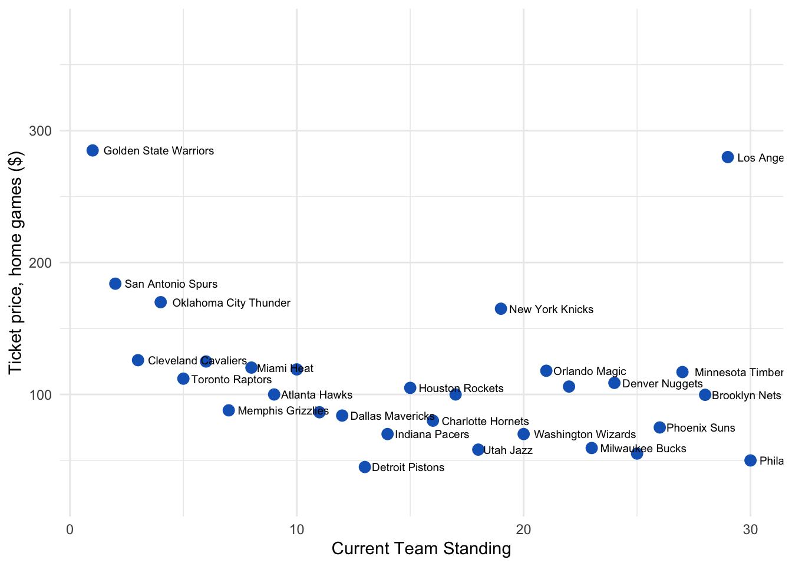
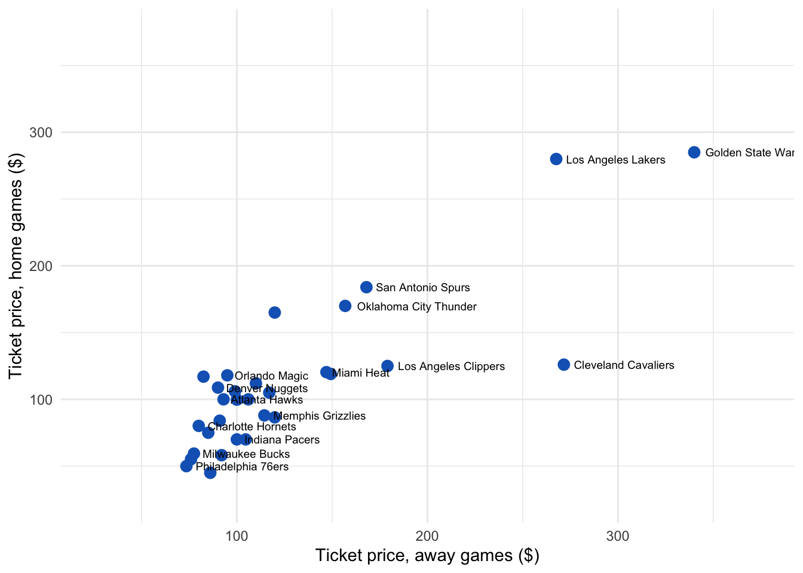

The Cost of NBA Games
I moved to the Bay Area almost three years ago, just in time to see the Golden State Warriors start to get pretty good. And then they got really, really, good. Being the serious, hardworking PhD student that I am, following the Warriors became a hobby. Turns out that this hobby, while healthier than drugs, may not be any cheaper.
I grabbed all data on resale tickets from StubHub for all remaining games of the 2015-16 season. As at 1 Feb, there were around 264,200 tickets for sale on StubHub. Note that these do not represent all tickets available, but the large sample size means that the prices are fairly representative of what you could expect to pay.
For those who don’t follow basketball: The NBA is made up of 30 teams, all of whom play each other at some point during the 82-game season. The teams are roughly geographically divided into either the Eastern Conference or the Western Conference. The Golden State Warriors are the number one ranked team in the Western Conference and won the Grand Final last season. Their star player is Stephen Curry, who has revolutionized basketball in the past few years with the efficacy of his 3 point throws. The Warriors are followed by the San Antonio Spurs, and the Oklahoma City Thunder. The number one team in the Eastern Conference is the Cleveland Cavaliers, whose star player is LeBron James. They are followed by the Toronto Raptors and the Boston Celtics.
###Home Games
The plot below shows median ticket price for home games versus current overall standing of the team. Unsurprisingly, going to Warriors home games is generally much more expensive than for any other team. At 285 dollars, the median ticket price for remaining games at Oracle Arena is around $100 more than the next closest team, the Spurs.
The median home game ticket price generally decreases as you go down the current standings. The most notable exception is the LA Lakers, where you can pay $280 to probably see them lose. But then, how long until we see another Kobe?
New York Knicks games are also more expensive than expected given their overall ranking, but is probably due to a Madison Square Garden premium and an income effect of living in New York (this income effect doesn’t stretch to Brooklyn). Another income effect – in the opposite direction – may be the Detroit Pistons, who, despite winning more than half their games and being ranked in the top half of teams, have the cheapest tickets available.
Median ticket prices generally decrease with team rankings, but this observation really only holds for the top ten-ranked teams. After that, apart Lakers and the Knicks, there is not much difference between median home game prices. Maybe the treadmill of mediocrity starts turning. You could be paying the same amount of money to see, for example, the Pacers or the Suns, even though the former have won twice as many games.
Median ticket price for remaining 15/16 home games
Everyone wants to see Curry (+ LeBron)
Oracle is notorious for its electric atmosphere, and Warriors fans are some of the most passionate in the league, so maybe there is a price premium for the home-court advantage. The plot below shows the median ticket price for each team, with the home-game price plotted against away-game price. While the home game prices for the Warriors are enough the make you fall over, the away game prices are even worse. The median price is 340 dollars for all remaining away games for the Warriors, $55 more than their home games. Everyone wants to see Curry score a three from their half court logo. The prospect of playing the Warriors must be daunting for any team, even at home. But the average price of tickets when the Warriors come to town must have the team and stadium owners rubbing their hands with joy.
For most other teams, home and away median prices are pretty close. The notable exception is the Cleveland Cavaliers, where the away game median price more than twice the home game price. This could be explained by the LeBron Effect: the King’s Lands reach far and wide. However, the Cleveland locals aren’t so excited. The number of times the Cavs have lost a championship is too high. They don’t want to pay too much, only to get their hearts broken again.
The three dots to the far right of the chart show that the Warriors, Lakers and Cavs fetch far more in away games than any other team. On the other hand, the San Antonio Spurs, despite being the second-best team in the league, having an All-Star starter, a record home-game start to the season and playing to sellout crowds at home, fail to instill any excitement in non-San Antonians. After all, Tim Duncan only dunks when necessary.
Median ticket price, home games versus away games

You pay for what you get
The plot below originally showed median ticket price for all remaining regular games in the 15/16 season, plotted against the average standing of the two teams playing, as an interactive Shiny app. The interactive app is no longer available, but the analysis code can be found here.
In general, you pay for what you get: the higher the combined ranking of the two teams playing, the more expensive the tickets. Lakers games buck this trend. Note that for visibility I left the most expensive game off this chart: Kobe’s final game at the Staples Center on 13 April has a median ticket price of around $1650!
Despite the high price of Warrior away-games in general, it could still be cheaper to fly to Utah in late March to see the Jazz game, than to see any remaining home games. The most expensive games are between the Warriors and Spurs or OKC, the two teams who are most likely to threaten the Warriors chances of breaking the Bull’s 72-10 record. No matter what happens, Steve Kerr still may be the luckiest man in NBA history.
Notes:
These charts were originally made using rCharts and have been converted to ggplot2. Code for scraping StubHub and analysis can be found here.